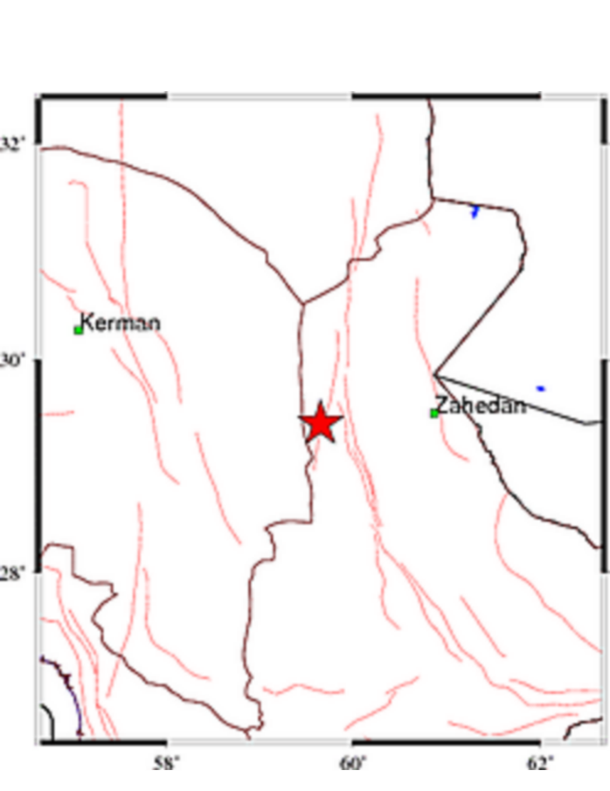

بازگشت
بازگشت

نصرت آباد ،سیستان و بلوچستان
دوشنبه، 25 فروردين 1404 در 22:40:15 (وقت محلي - تهران)
2025-04-14 19:10:15 (UTC
بزرگی زمین لرزه:3.5
نوع بزرگی :MN
موقعیت رو مرکز
عرض جعرافیایی(درجه - شمالی) :29.93
طول جغرافیایی(درجه - شرقی) : 59.86
عمق(کیلومتر) :10
فاصله ها :
15 كيلومتري نصرتآباد، سيستان و بلوچستان
120 كيلومتري سرجنگل، سيستان و بلوچستان
109کیلو متری زاهدان ، سیستان و بلوچستان
منبع : موسسه ژئوفیزیک ، دانشگاه تهران